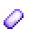
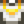

Refined Quartz
Jump to navigation
Jump to search
| Refined Quartz | |
 |
|
| A more pure form of quartz. | |
| Information | |
| Source | Furnace |
| Sell Price | |
| Crafting | |
| Equipment | |
| Processing Time | |
| Ingredients | |
Refined Quartz is created by smelting 1 Quartz in a furnace with 1 coal for fuel. 1 Fire Quartz can also be placed in a furnace with 1 coal to produce 3 Refined Quartz. It can also be obtained in a variety of ways.
It can be sold for  50g. Until obtaining the Crystalarium it is a lot faster and easier to obtain Refined Quartz via the Recycling Machine than from quartz itself.
50g. Until obtaining the Crystalarium it is a lot faster and easier to obtain Refined Quartz via the Recycling Machine than from quartz itself.
Locations
- Can very rarely be found in the Mines by breaking large crystals.
- Can be created by smelting 1 Quartz in a furnace with 1 Coal. Smelting takes 1.5 in-game hours.
- Can be created by smelting 1 Fire Quartz in a furnace with 1 Coal, which produces 3 Refined Quartz. Smelting takes 1.5 in-game hours.
- Can be created by recycling a Broken CD or Broken Glasses.
- Can occasionally be found in Garbage Cans after receiving the Furnace blueprints from Clint.
- Can be a rare drop from Ghosts in The Mines. (Floors 51-79)
- Can be dropped by Carbon Ghosts in the Skull Cavern. (10% chance)
- Can be produced by Ghostfish Fish Ponds when the population reaches 9.
Crafting
| Image | Name | Description | Ingredients | Recipe Source |
|---|---|---|---|---|
| Crystal Floor (5) | Place on the ground to create paths or to spruce up your floors. | |||
| Crystal Path (5) | Place on the ground to create paths or to spruce up your floors. | |||
| Farm Computer | Scans the farm and displays useful information. | |||
| Garden Pot | Grows crops from any season when indoors. Outdoors, it can only house seasonal crops. | |||
| Lightning Rod | Collects energy from lightning storms and turns it into battery packs. | |||
| Quality Sprinkler | Waters the 8 adjacent tiles every morning. | |||
| Sonar Bobber | Shows what fish is on the line before it's caught. | |||
| Solar Panel | Slowly generates batteries when left in the sun. |
Buildings
| Image | Name | Description | Cost | Size |
|---|---|---|---|---|
| Slime Hutch | Raise up to 20 slimes. Fill water troughs and slimes will create slime balls. | 7x4 |
Gifting
| Villager Reactions
| |
|---|---|
| Neutral | |
| Dislike | |
| Hate | |
Bundles
5 Refined Quartz are used in the  Engineer's Bundle in the Boiler Room (Remixed).
Engineer's Bundle in the Boiler Room (Remixed).
Tailoring
Refined Quartz is used in the spool of the Sewing Machine to create the dyeable 
Quests
- Refined Quartz may be randomly requested during any season at the "Help Wanted" board outside Pierre's General Store for a reward of
 150g and 150 Friendship points. Refined Quartz will never be requested until you have the Furnace blueprints.
150g and 150 Friendship points. Refined Quartz will never be requested until you have the Furnace blueprints. - Two, three, five, or ten Refined Quartz may be requested by several fish in Fish Pond quests.
History
- 1.3.27: Added ability to smelt with fire Quartz. Added Garden Pot recipe.
- 1.4: Sturdy Ring does not use Refined Quartz to craft anymore. Refined Quartz can now be used in Tailoring. Can be requested in Fish Pond quests. Can be produced by Fish Ponds.
- 1.5: Is now used in a remixed bundle. Now used as an ingredient in the Solar Panel and Farm Computer recipes.
- 1.6: Now used in Sonar Bobber recipe.
| Resources | |
|---|---|
| Basic | Battery Pack • Bone Fragment • Cinder Shard • Clay • Coal • Fiber • Hardwood • Moss • Stone • Wood |
| Ore | Copper Ore • Iron Ore • Gold Ore • Iridium Ore • Radioactive Ore |
| Bars | Copper Bar • Iron Bar • Gold Bar • Iridium Bar • Radioactive Bar • Refined Quartz |